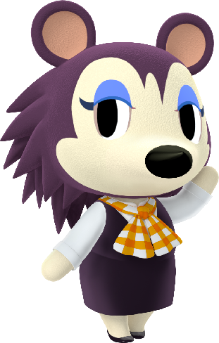
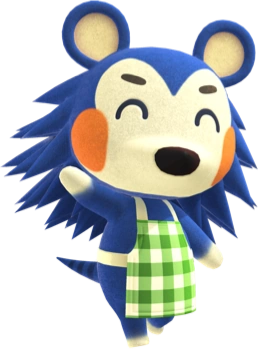

Ropa en Animal Crossing

La ropa es uno de los elementos más importantes para personalizar a tu personaje y expresar tu estilo dentro del juego. A lo largo de la aventura puedes conseguir cientos de prendas diferentes, desde camisetas básicas hasta vestidos elegantes, disfraces completos y accesorios únicos.
Más allá de lo estético, la ropa permite crear outfits temáticos, combinar colores, adaptarte a las estaciones del año y reflejar tu personalidad en cada momento.

Ropa casual
Incluye camisetas, sudaderas, vaqueros y vestidos sencillos. Es el estilo más común y cómodo, ideal para el día a día en la isla. Perfecta para looks relajados y combinaciones simples.
Ropa elegante
Vestidos formales, trajes, chaquetas y prendas más refinadas. Se usan mucho para eventos especiales o para crear outfits más sofisticados y estilosos.
Ropa deportiva
Camisetas técnicas, pantalones cortos, zapatillas y conjuntos pensados para actividades físicas. Va muy bien con vecinos deportistas y para looks activos.
Ropa adorable
Prendas con diseños tiernos: lazos, colores pastel, estampados kawaii y vestidos dulces. Muy popular entre jugadores que buscan un estilo cute.
Ropa tradicional
Incluye kimonos, yukatas y trajes inspirados en distintas culturas. Ideal para crear atuendos temáticos o representar estilos culturales dentro del juego.